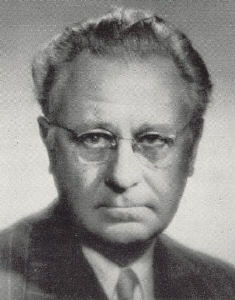

|  |
Sjögren's syndrome = A chronic autoimmune disease characterised chiefly by keratoconjunctivitis sicca and dry mouth.
Henrik Samuel Conrad Sjögren was the son of the merchant Anders Conrad Johansson and Marta Emelie Sjögren. He completed the Gymnasium in Västerås in 1918 and graduated in medicine from the Karolinska institutet 1922. In 1927 he qualified as a physician, and the next year he married his student mate Maria Hellgren, daughter of one of the most prominent ophthalmologists in Stockholm. His interest in ophthalmology goes back to 1925, the year he became employed at the Serafimerlasarettet, where he first met a patient with “his” syndrome, a 49 year old woman. Shortly afterwards he was employed at the Sabbatsbergs sjukhus, and within a short time had accumulated another four cases which were all published in1930.
Sjögren described his syndrome in 1933 in his doctoral thesis “Zur Kenntnis der keratoconjunctivitis sicca”. His thesis was not of a sufficiently high standard for him to be awarded the title of "docent", and thus he was denied the opportunity for a career in academic ophthalmology. In 1943, however, the paper was translated into English, a fact that contributed to establishing the eponym. In France, however, the term Gougerot’s syndrome was in use for decades, as he in 1925 had described three cases of atrophy of the saliva glands associated with dry eyes, dry mouth and dry vagina. Sjögren’s very comprehensive and important work justifies the now accepted designation of Sjögren’s disease.
In 1936 Sjögren took up an appointment for eye medicine in Jönköpings lasarett, and in1938 Henrik Sjögren was appointed as a "lasarettsläkare" there. Jönköping thus became the first Swedish country town with an ophthalmological department. It was here that he became interested in the question of grafting the cornea and developed the technique. At his retirement in 1967 a considerable number of patients had benefited from his expertise in diseases of the cornea.
In 1957 Sjögren became associate professor – docent - at the University of Göteborg and in 1961 he received the title of honorary professor. In 1951 he was elected honorary member of The Australian Ophthalmological Society, in 1970 of the American Rheumatism Organisation, and in 1976 of Svensk reumatologisk forening and of the Royal College of Physicians and Surgeons of Glasgow.
On September 17, 1986, Henrik Sjögren died in a nursing in Lund,
where he had been living since retirement. He specially enjoyed having
access to the library there.
Reference: